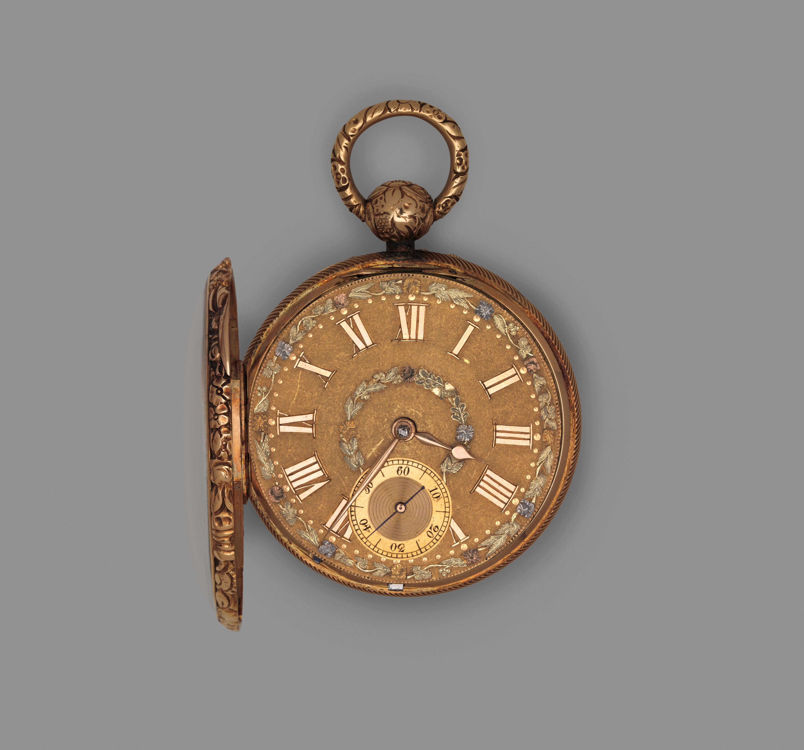
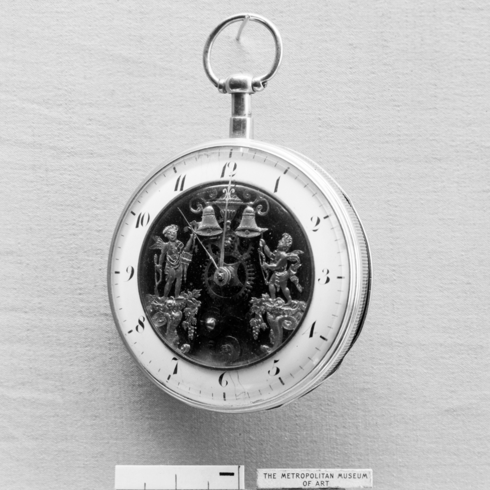
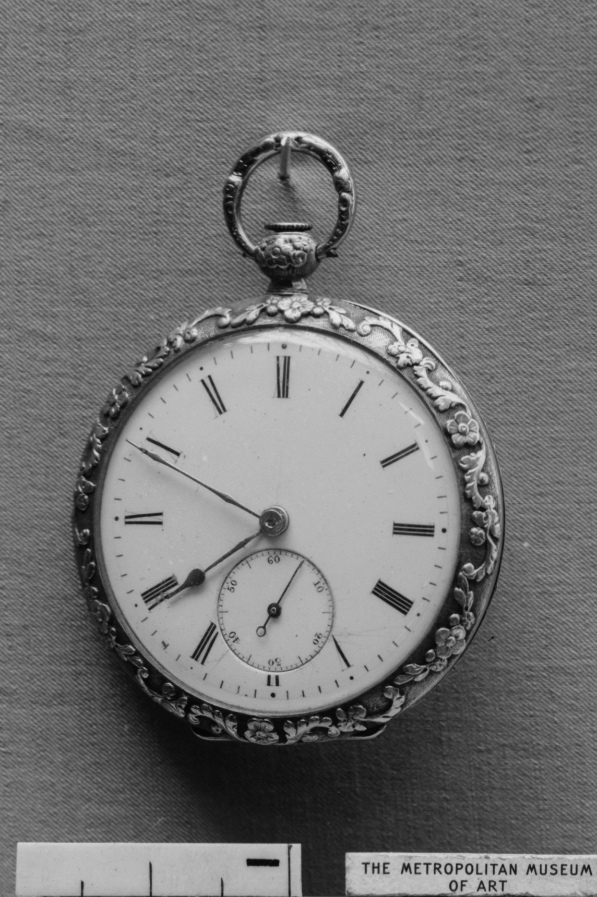

Typography with mass.
Content first — mechanical chronometry constructed without compromise. A strict twelve-column grid, high-contrast ink on paper-white, and one crimson signal.
Calibre 4100
SIGNATURE — LIVE CONFIGURATORLive Dynamic Configurator
Interact with the escapement parameters. Notice zero layout shift and instant, zero-latency feedback.
Reference Plates
ARCHIVAL SOURCES / PUBLIC DOMAIN




Structural Invariants
REGISTER — 04 ENTRIESNo fake numbers, no stock photography
Every claim represents verifiable manufacture data. If an asset is absent, the interface accommodates it with pure typography — never invented filler.
Strict variable bounds
All colour and type declared at :root. Not a single rogue hex literal exists in the stylesheet.
Transform and opacity only
Zero width, height, or positional reflows. Motion is calculated along hardware-accelerated vectors.
Universal 1280 × 800 invariant
The primary message and actionable intent remain permanently anchored on first load across every display ratio.
Manufacture Catalog
DOCUMENTED RUNS — 2026| Model Reference | Annual Quota | Status |
|---|---|---|
| AUR-4100-TI | 120 Units | In Production |
| AUR-4800-CE | 80 Units | Allocated |
| AUR-5200-OB | 30 Units | Waitlist Only |